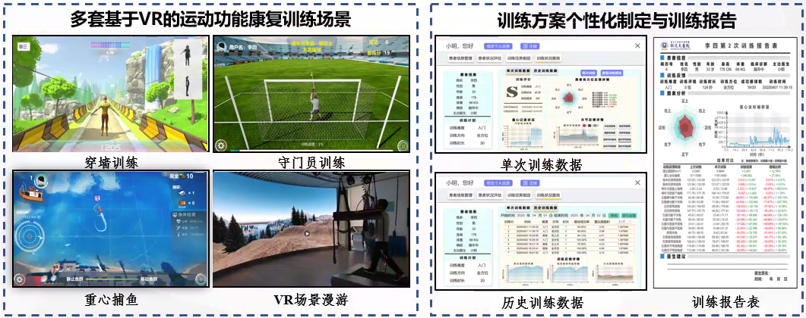
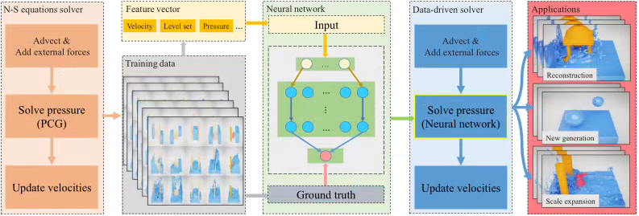
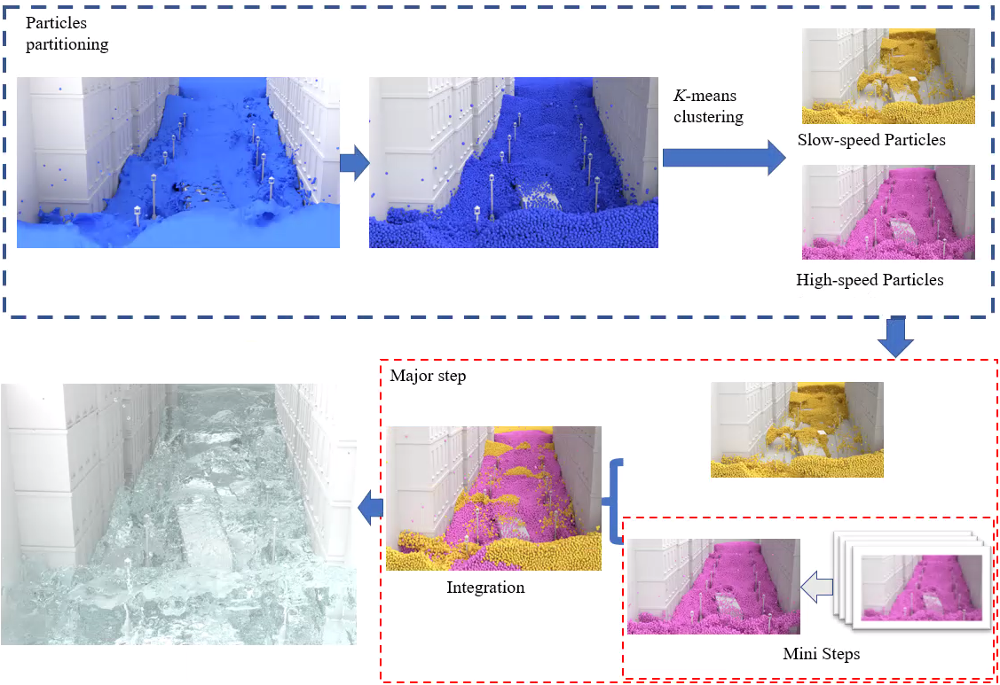
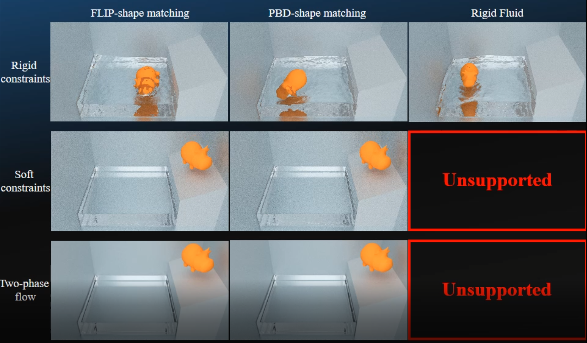
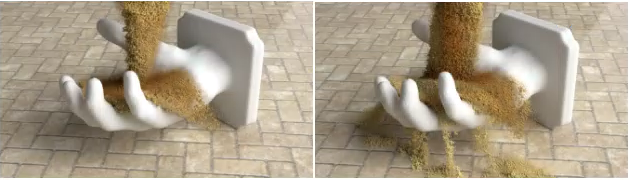
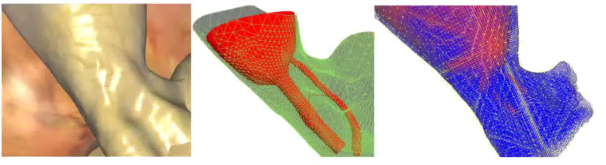
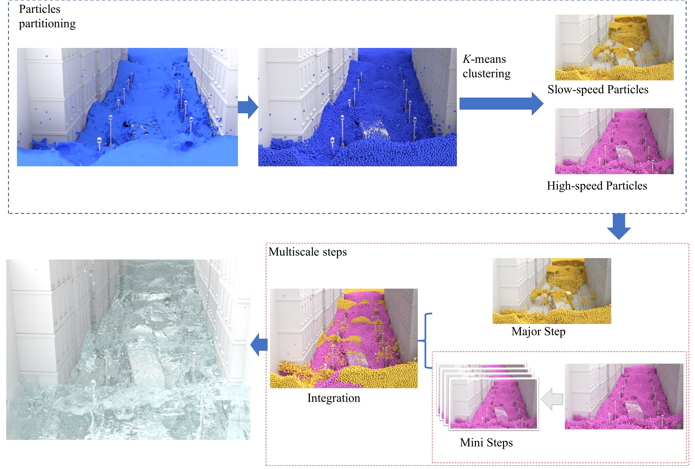
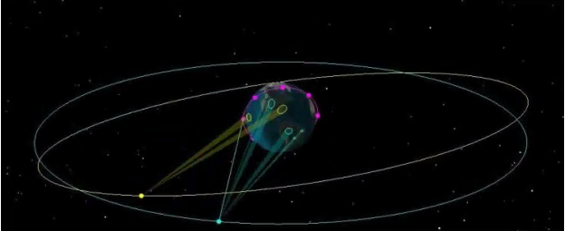
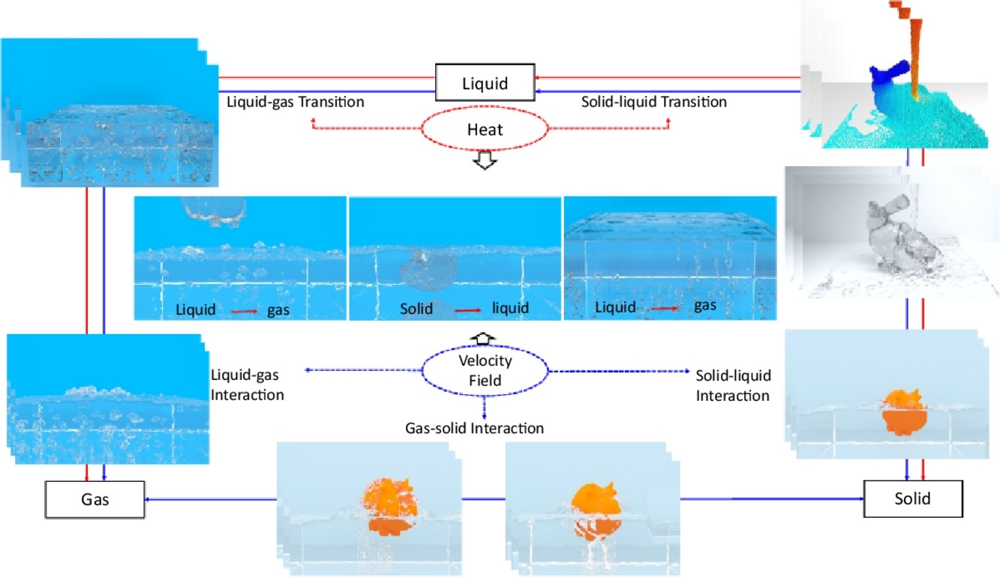
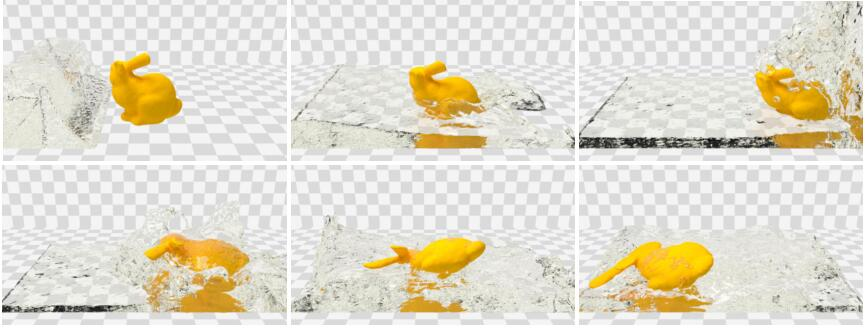

I'm currently an assistant Professor in computer science at the State Key Laboratory of Virtual Reality Technology and Systems (SKL. VR Technology and Systems, 虚拟现实技术与系统国家重点实验室) of Beihang University in Beijing. Prior to this, I received a PhD degree from Beihang University in 2019, supervised by Prof. Aimin Hao (郝爱民 教授), and I am in long-term collaboration with Prof. Hong Qin (秦洪 教授). My research interests include, realistic fluid animation, 3D modelig.
Here's my cv in English and Chinese.
Recent research interests:
- Physics-based fluid modelling/simulation
- VR + Rehabilitation
- Data-driven based 3D reconstruction
- VR+ Physiological signal (EEG/EMG)
Publications and Presentations
News
2020

Lower Limb Balance Rehabilitation of Post-stroke Patients Using an Evaluating and Training Combined Augmented Reality System.
Shuwei Chen, Ben Hu,
Yang Gao*, Zhiping Liao, Jianhua Li and Aimin Hao.
IEEE International Symposium on Mixed and Augmented Reality (ISMAR), accepted (poster).
[PDF]

Accelerating Liquid Simulation With an Improved Data-Driven Method.
Yang Gao*, Quancheng Zhang, Shuai Li, Hong Qin and Aimin Hao.
Computer Graphics Forum, 39(6): 180-191, 2020.
[PDF]

Dynamic Particle Partitioning SPH Model for High-speed Fluids Simulation.
Yang Gao,Zhong Zheng, Jin Li, Shuai Li*, Hong Qin and Aimin Hao.
Graphical Models, 109: 101061, 2020.
[PDF]
2019

An efficient FLIP and shape matching coupled method for fluid–solid and two-phase fluid simulations.
Yang Gao*, Shuai Li, Yinghao Xu, Hong Qin and Aimin Hao.
The Visual Computer, 35: 1741–1753, 2019.
[PDF]

A Hybrid Method for Powdered Materials Modeling.
Yang Gao*, Yinghao Xu, Shuai Li, Aimin Hao and Hong Qin.
25th ACM Symposium on Virtual Reality Software and Technology, 14: 1–10, 2019.
[PDF]

Real-time Simulation of Electrocautery Procedure using Mesh-free Methods in Laparoscopic Cholecystectomy.
Junjun Pan, Yuhan Yang,
Yang Gao, Hong Qin and Yaqing Qi.
The Visual Computer volume 35, pages861–872, 2019.
[PDF]
2018 and before

Robust and Efficient SPH Simulation for High-speed Fluids with the Dynamic Particle Partitioning Method.
Zhong Zheng,
Yang Gao, Shuai Li, Yinghao Xu, Hong Qin and Aimin Hao (Co-First author).
Pacific Graphics 2018, 10.2312/pg.20181268 (short paper).
[PDF]

A novel location awareness method for spot beam emitters.
Weicai Yang，Qing Chang，Hui Li，
Yang Gao>，Lina Bao.
IET Radar, Sonar & Navigation, 12(12): 1493-1499, 2018.
[PDF] 
An efficient heat-based model for solid-liquid-gas phase transition and dynamic interaction.
Yang Gao, Shuai Li, Lipeng Yang, Hong Qin and Aimin Hao.
Graphical Models, 94: 14-24, 2017.
[PDF]

A Novel Fluid-solid Coupling Framework Integrating FLIP and Shape Matching Methods.
Yang Gao, Shuai Li, Aimin Hao and Hong Qin.
Proceedings of the Computer Graphics International Conference (CGI), 2017.
[PDF]